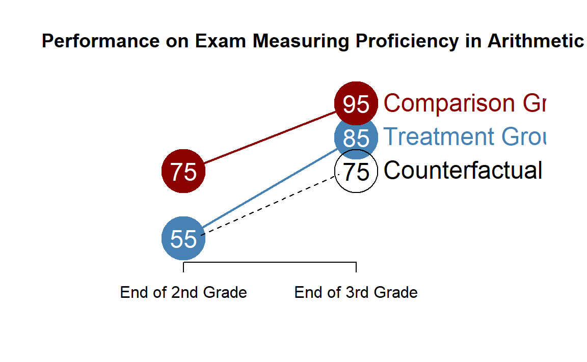
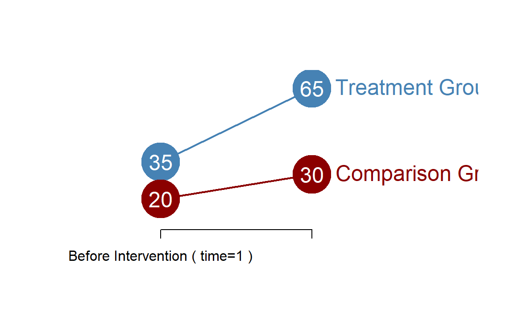
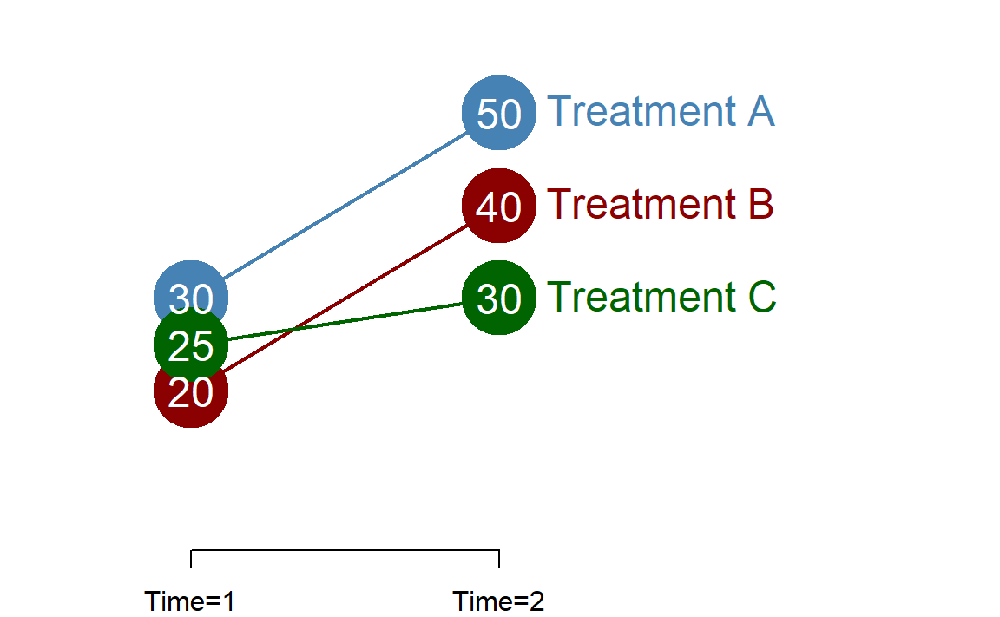

Chapter 18 Difference-in-Difference Models
The next lecture introduces an important concept in regression analysis called an “interaction”.
As we will see, this regression technique is important in Program Evaluation because it is used to test for program effects when we don’t have the luxery of a true randomized experiment (treatment and control groups are identical except for the treatment), but we do have a strong research design (a treatment and comparision group, and both pre and post-treatment measures).
This type of design is called a difference-in-difference model. It is one of the most robust and flexible quasi-experimental designs that we have. We can analyze difference-in-difference data using a standard OLS regression model with interactions.
18.1 Example
Let’s start with a basic example of a tutoring program within a school. We have test scores from two groups of boys in 3rd grade at a local elementary school. It has been determined that some of the boys have received inadequate preparation for the current math curriculum, so they have been offered additional tutoring. The other boys receive regular classroom instruction throughout the year. The average scores for each group in the pre and post periods look like this:
18.1.1 Gains Realized by Comparison Group (The First Difference)
As we try to measure the impact of a specific program we have to keep in mind that other factors may influence outcomes over time. These are often referred to as secular trends, or changes that we expect to see independent of the intervention.
\[ \textrm{Trend} = C2 - C1 = 95 - 75 = 20 \]
18.1.2 Gains Realized by the Treatment Group (The Second Difference)
If we want to determine program impact we can measure the change in the treatment group based upon our outcome level before receiving the treatment and after receiving the treatment. This shows total change over the treatment period. It will also contain both changes attributable to program impact, as well as general changes attributable to trend.
\[ \textrm{Treatment Group Gains} = T2 - T1 = 85 - 55 = 30\]
18.1.3 Realized Gains Minus Expected Gains (Diff-in-Diff)
In order to isolate program impacts we must subtract out the gains that we would expect the treatment group to make independent of the program. The total gain minus the gain from trend is called the difference-in-difference estimate.
\[ \textrm{Treatment Gains - Trend} = (T2 - T1) - (C2 - C1) = 30 - 20 = 10 \] In this case we can see that the tutoring program is leading to gains of an extra ten points more than what we would expect from a typical third grader over the year not enrolled in the program.
18.2 The Counterfactual
Any time we measure the impact of a program we must compare the final state of the treatment group to some other state of the world. The sensible question is to ask, what would this group look like if it had not received the treatment?
The counterfactual tells us what the treatment group would look like if there was no program impact.
If we have the luxury of performing a randomized experiment then from the statistical standpoint the control group embodies the counterfactual. If randomized is done successfully the only difference between the treatment and control group will be, on average, whether the members received the treatment or not. This simplifies our lives because after the study we can attibute all of the differences in group means to the program effects.
In most cases, however, we do not have the opportunity or ability to conduct a true experiment. Instead, we need to create a reasonable comparision group that we can use for counterfactual analysis, and we can use this group to observe changes we expect to see indepedent of the treatment. This is the first difference, or the trend in the example above.
Since our treatment group and our comparison group might not have identical pre-treatment characteristics the counterfactual must account for these differences. The proper way to think about this is:
\[ \textrm{Counterfactual} = T1 + Trend \]

Any time we calculate a program treatment effect there is an explicit or an implied counterfactual. The problematic evaluations are usually ones in which they are unclear about the counterfactual in the study.
18.3 Difference-in-Difference Models
The formal difference-in-difference estimate uses a regression model to examine program effects. It is a slightly odd regression because all of the variables in the model are dummy variables. The model is written as follows:
\[ Y = b_{0} + b_{1} \cdot Treat + b_{2} \cdot Post + b_{3} \cdot Treat \cdot Post + e \]
The data looks something like this:
| y | intercept | treat | post | treat_post |
|---|---|---|---|---|
| y1 | 1 | 0 | 0 | 0 |
| y2 | 1 | 0 | 1 | 0 |
| y3 | 1 | 1 | 0 | 0 |
| y4 | 1 | 1 | 1 | 1 |
| A | B | C | D |
In this example, y1 to y4 represent some measured level of the outcome. The intercept in the model is a vector of all 1’s. And each other variable is a dummy variable. Note that the last term in this model, treat_post is an interaction effect. It is created by multiplying the variables treat and post.
18.3.1 Example
Let’s consider the following case:

Now let us estimate this model using our difference-in-difference regression, which gives us the following results:
| moxy | treat | post |
|---|---|---|
| 20 | 0 | 0 |
| 20 | 0 | 0 |
| 20 | 0 | 0 |
| 20 | 0 | 0 |
| 20 | 0 | 0 |
| 20 | 0 | 0 |
m0 <- lm( moxy ~ C1 + C2 + T1 + T2 - 1 )
m1 <- lm( moxy ~ treat )
m2 <- lm( moxy ~ post )
m3 <- lm( moxy ~ treat + post )
m4 <- lm( moxy ~ treat + post + treat*post )
# library( stargazer )
stargazer( m4, type='html', digits=0,
omit.stat=c("f","rsq","adj.rsq","ser"),
intercept.bottom = FALSE,
covariate.labels = c("b0: Intercept (A)", "b1: Treatment Group (B)",
"b2: Post-Period (C)", "b3: Treat x Post (D)" ) )| Dependent variable: | |
| moxy | |
| b0: Intercept (A) | 20*** |
| (0) | |
| b1: Treatment Group (B) | 15*** |
| (0) | |
| b2: Post-Period (C) | 10*** |
| (0) | |
| b3: Treat x Post (D) | 20*** |
| (0) | |
| Observations | 400 |
| Note: | p<0.1; p<0.05; p<0.01 |
It takes a little bit of knowledge to make sense of the results. The important insight is that each coefficient represents a component of the outcome, so you need to add components together to get the actual group means.
The other important insight is that each coefficient represents a distinctive statistical test.
Recall that we can conduct a t-test using a regression model by including a dummy variable. The coefficient in the regression model will represent the group mean difference, and the significance level will be identical to a normal t-test.
When you test a difference in means between two groups it is called a contrast. Since we have multiple dummy variables in our model we have multiple contrasts. To understand each test you must understand the implied reference group of each test.
18.3.2 Interpretation
For example, the Comparison Group during the first period of the study has a mean outcome of 20. Since we have included a dummy variable representing our Treatment Group in the model, the omitted category is the Comparison Group, so it ends up in the intercept \(b_{0}\) in our regression model. Similarly, since we have a dummy variable representing the Post-Intervention time period, the omitted category is Pre-Intervention, which also defaults to the intercept. A on the diagram above then represents the non-Treatment, non-Post Intervention group, or the Comparison Group in the Pre-Intervention period.
Similar to other regression models, each coefficient has an associated level of significance. Similar to other regressions we have run, this level of significance represents a hypothesis test of whether the coefficient is equal to zero. In the typical case with a continuous numerical measure, if the slope is equal to zero it represents no relationship. In this case it is a t-test of whether the mean of the base group is equal to zero.
The Comparison Group during the second time period has a mean outcome of 30. We don’t have a coefficient for Comparison Group Time=2 specifically in our model, so we must construct the group mean from other coefficients. We can see that the group can be represented by adding up A + C on the diagram, or adding the coefficient \(b_{2}\) to the intercept (10 + 20) to arrive at the group mean of 30.
Similarly, we can find the group mean for the Treatment Group at Time=1 by adding the coefficient \(b_{1}\) to the base group, 20 + 15, to get 35. This is represented by A + B in the diagram above.
Let’s pause for a moment and consider the statistical significant associated with coefficients \(b_{1}\) and \(b_{2}\). Here is where the reference group becomes important. Since each coefficient represents the difference between the group mean and the reference group, the hypothesis is a test of whether the outcome in those groups differ.
Since \(b_{1}\) is 15, the coefficient represents a test of whether \(T1 - C1 = 0\). In other words, did the Treatment and Comparison groups differ significantly in the first time period?
Since \(b_{2}\) is 10, the coefficient represents a test of whether \(C2 - C1 = 0\). In other words, did the Comparison group change significantly between the first and second time periods?
Now the last contrast is the tricky one. To make sense of this one we need to think about the reference group for this contrast. Note that we can create a Post-Test Treatment group by adding \(b_{0} + b_{1} + b_{2}\) (A + B + C on the diagram), but this only comes to 20 + 10 + 15, or 45. The actual mean outcome measured for group T2 is 65. So how do we arrive at this number?
Recall that \(b_{3}\) represents the coefficient from an interaction effect. The interpretation is an interaction is that the whole is greater than the sum of the parts. When an interaction is present, we observe an impact larger than the impact of two independent direct effects (the gains from being in the Treatment group, and the expected gains from the secular trend, in this case).
The measure \(b_{0} + b_{1} + b_{2}\) tells us where we should expect the group mean of T2 to reside (the counterfactual), and the coefficient \(b_{3}\) tells us whether the actual group mean is different, i.e. whether we experiences a treatment effect from this program. We see in the model that \(b_{3}=20\), meaning the observed group mean is 20 points higher than we would expect if the treatment did not work.
18.3.3 Summary of Hypothesis Tested
Is the Comparison Group in Time=1 different from zero?
- Coefficient \(b_{0}\)
- \(Null: C1 = 0\)
Is the Treatment Group different from the Comparison Group in Time=1?
- Coefficient \(b_{1}\)
- \(Null: T1 - C1 = 0\)
Is the Comparision Group in Time=2 different than the Comparison Group in Time=1? I.e. is there a secular trend?
- Coefficient \(b_{2}\)
- \(Null: C2 - C1 = 0\)
Is the Treatment Group in Time=2 different from the counterfactual? Does the program have impact?
- Coefficient \(b_{3}\)
- \(Null: (T2-T1) - (C2-C1) = 0\)
18.3.4 Three Cases
Let us consider three cases where statistical significance might be of interest.

The regression results would be as follows:
# m1 <- lm( moxy ~ treat + post + treat*post )
# m2 <- lm( moxy ~ treat + post + treat*post )
# m3 <- lm( moxy ~ treat + post + treat*post )
stargazer( m1, m2, m3, type='html', digits=1,
omit.stat=c("f","rsq","adj.rsq","ser"),
intercept.bottom = FALSE,
covariate.labels = c("Intercept (A)", "Treatment Group (B)",
"Post-Period (C)", "Treat x Post (D)" ) )| Dependent variable: | |||
| moxy | |||
| (1) | (2) | (3) | |
| Intercept (A) | 20.0*** | 20.0*** | 20.0*** |
| (1.4) | (1.4) | (1.4) | |
| Treatment Group (B) | 10.0*** | -0.0 | 10.0*** |
| (1.9) | (1.9) | (1.9) | |
| Post-Period (C) | -0.0 | 5.0** | 10.0*** |
| (1.9) | (1.9) | (1.9) | |
| Treat x Post (D) | 10.0*** | 15.0*** | 0.0 |
| (2.7) | (2.7) | (2.7) | |
| Observations | 84 | 84 | 84 |
| Note: | p<0.1; p<0.05; p<0.01 | ||
Note the lack of significance for the specific hypotheses in each case.
Case 1: When \(b_{2}\) is not significant, it tells us there is no secular trend in the data.
Case 2: When \(b_{1}\) is not significant, it tells us there is no different between the measured outcomes of the treatment and comparison groups during the first time period.
Case 3: When \(b_{3}\) is not significant, it tells us that all gains observed in the treatment group are coming from the secular trend and not the program.
18.3.5 Multiple Treatment Groups
Sometimes your study may contain multiple treatment groups.

In order to specify the regression we again must omit one group, which will become the reference group in the study. In this case we will omit Treatement C as the reference group.
A1 <- seq(20,40)
A2 <- seq(40,60)
B1 <- seq(10,30)
B2 <- seq(30,50)
C1 <- seq(15,35)
C2 <- seq(20,40)
moxy <- c(A1,A2,B1,B2,C1,C2)
GroupA <- rep( c(1,0,0), each=42 )
GroupB <- rep( c(0,1,0), each=42 )
GroupC <- rep( c(0,0,1), each=42 )
post <- rep( c(0,1,0,1,0,1), each=21 )
m1 <- lm( moxy ~ post + GroupA + GroupB + GroupA*post + GroupB*post )
stargazer( m1, type='html', digits=1,
omit.stat=c("f","rsq","adj.rsq","ser"),
intercept.bottom = FALSE,
covariate.labels = c("b0: Intercept", "b1: Post","b2: Treatment A",
"b3: Treatment B", "b4: A x Post", "b5: B x Post" ) )| Dependent variable: | |
| moxy | |
| b0: Intercept | 25.0*** |
| (1.4) | |
| b1: Post | 5.0** |
| (1.9) | |
| b2: Treatment A | 5.0** |
| (1.9) | |
| b3: Treatment B | -5.0** |
| (1.9) | |
| b4: A x Post | 15.0*** |
| (2.7) | |
| b5: B x Post | 15.0*** |
| (2.7) | |
| Observations | 126 |
| Note: | p<0.1; p<0.05; p<0.01 |
Note that you will again build group means from their component parts. For example, Treatment A can be represented as \(b_{0} + b_{2}\) in period one, and \(b_{0} + b_{1} + b_{2} + b_{4}\) for period two.
The main thing to note is that the counterfactual has now become the gains that you expect in the omitted group. It makes sense in this case to omit the group with the least gains because then you can interpret the program effects \(b_{3}\) or \(b_{4}\) as gains you expect over the least effective treatment option.
Note that the coefficient \(b_{1}\) associated with the Post-Treatment period is no longer interpretted as trend.